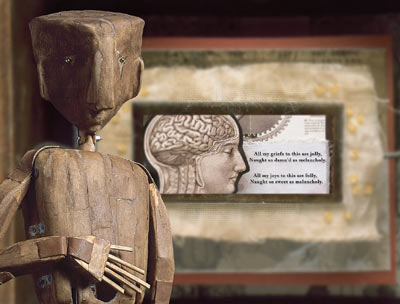

Tuesday, January the 11th, 2005
back to: title, date or indexes
Glyn Webster has drawn my attention to a puppetry adaptation of The Anatomy Of Melancholy devised by Pamella O'Connor. You can read a review of it and see plenty of production stills like the one below. I think a British puppetry impresario needs to be persuaded to bring the show to this country. Now.
